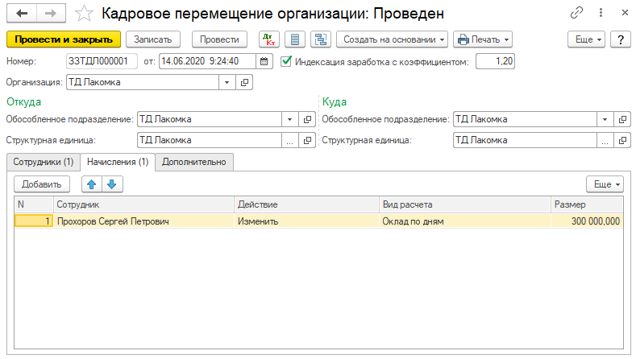
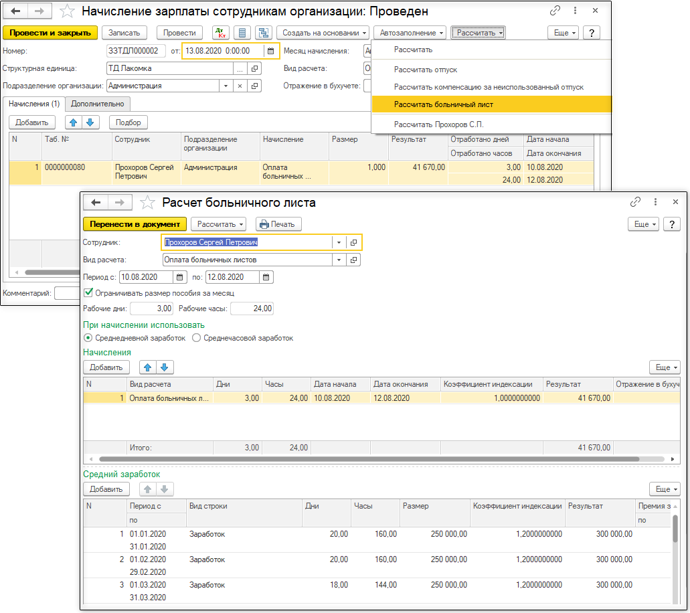
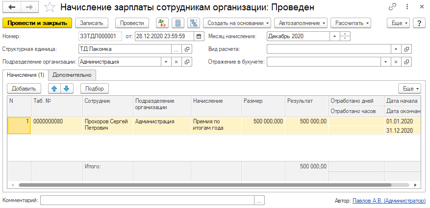
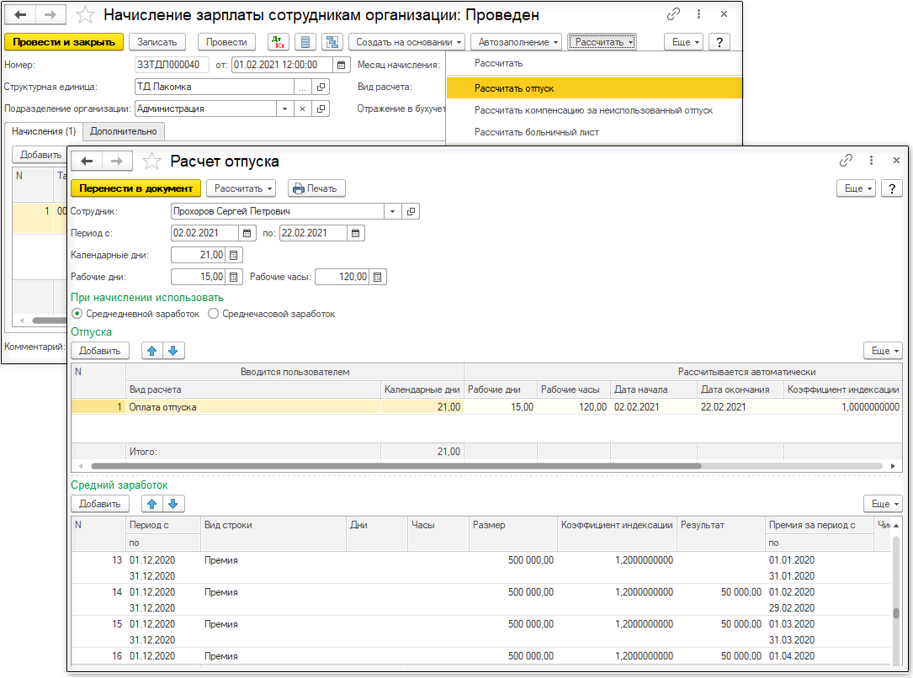

Обработка «Расчет по среднему заработку»
Обработка предназначена для автоматизации расчетов начислений сотрудникам организаций, осуществляемых с использованием среднего заработка: оплата отпуска и компенсации за неиспользованный отпуск, а также оплаты больничных листов.
Обработка вызывается из формы документа Начисление зарплаты сотрудникам организаций по команде Рассчитать отпуск, Рассчитать компенсацию за неиспользованный отпуск и Рассчитать больничный лист. Для использования обработки необходимо, чтобы в табличной части документа Начисление зарплаты сотрудникам организаций присутствовали строки только по одному сотруднику организации и используемые виды начислений рассчитывались по одному способу расчета: По среднему заработку для отпуска или По среднему заработку для больничных в зависимости от используемого режима расчета.
Для расчета оплаты отпуска и компенсации за неиспользованный отпуск необходимо:
-
указать сотрудника организации;
-
задать даты нахождения в отпуске (дата начала и дата окончания);
-
указать вид начисления, которым будет производится оплата. Выбор осуществляется из плана видов расчета Начисления организации среди видов, рассчитываемых по способу По среднему заработку для отпуска.
Для расчета оплаты больничных листов необходимо:
-
указать сотрудника организации;
-
указать вид начисления, которым будет производится оплата. Выбор осуществляется из плана видов расчета Начисления организации среди видов, рассчитываемых по способу По среднему заработку для больничных.
-
указать даты нахождения на больничном листе;
-
отметить флажок Ограничивать размер пособия за месяц при необходимости.
Расчет производится по команде Рассчитать верхней панели формы. Имеется возможность отдельного расчета данных среднего заработка и начислений. Для этого используются пункты меню Рассчитать средний заработок и Рассчитать начисления.
При расчете среднего заработка, необходимо обратить внимание на следующее:
- Базовые виды расчета. На этой закладке необходимо перечислить все виды начислений, которые входят в расчет среднего заработка. Например, для вида расчета Оплата больничных листов необходимо задать в качестве базовых такие виды начислений как Оклад по дням, Оплата по часовому тарифу, Премия и т.д.;
-
Флажок Засчитывается как отработанное время для базовых видов расчета. По нему определяется количество рабочих дней за расчетный период, указанные в реквизите "Дней" в табличной части "Начисления" документа Начисление зарплаты сотрудникам организаций;
-
Вид премии. Суммы по видам расчета, отмеченным как премии, включаются в расчет среднего заработка пропорционально отношению числа месяцев, за которые начислена премия и которые попадают в расчетный период, к общему числу месяцев, за которые начислена премия. Период, за которые начислена премия, определяется по датам начала и окончания, указанным в документе Начисление зарплаты сотрудникам организаций в строке премии;
-
Признак применения повышающего коэффициента при расчете среднего заработка. Задается в плане видов расчета
Начисления организаций на закладке
Расчеты. Если вид начисления отмечен как индексируемый, то при расчете среднего заработка к его сумме будет применяться повышающий коэффициент, в противном случае сумма по виду начисления всегда будет включаться в базу среднего заработка с единичным коэффициентом.
- Сведения об повышении заработка сотрудников, сохраняемые в регистре сведений Коэффициенты индексации заработка при проведении документов Кадровое перемещение организаций, у которых установлен реквизит Индексация заработка.
-
Настройки регистра сведений Учетная политика (по персоналу) в части расчета среднего заработка.
Количество календарных дней, используемое в расчете среднего заработка при оплате отпуска и компенсации за неиспользованный отпуск, определяется на основании данных
регламентированного производственного календаря за период расчета среднего заработка, из которого исключаются календарные дни, зарегистрированные видами расчета со способами
По среднему заработку для отпуска и
По среднему заработку для больничных.
По результатам расчета можно получить печатную форму Расчет среднего заработка, формируемую по команде Печать" верхней панели формы обработки.
Результаты начислений переносятся в табличную часть документа Начисление зарплаты сотрудникам организаций, из которого была вызвана обработка, по команде Перенести в документ верхней панели формы обработки.
Внимание! Данные табличной части Средний заработок не сохраняются в информационной базе. При повторном вызове обработки следует заново рассчитать средний заработок.
Примеры расчета.
Прохоров С.П. принят на работу в организацию 01 января 2020 г. с окладом 250 000. 14 июня 2020 г. ему был повышен должностной оклад до 300 000 (коэффициент повышения 1.2). Это повышение отражается в информационной базе документом Кадровое перемещение организаций с установленным признаком Индексация заработка с коэффициентом.

За период с 10 по 12 августа 2020 г. сотрудник предоставил листок временной нетрудоспособности. Рассчитать начисление за период нетрудоспособности можно с помощью обработки Расчет по среднему заработку, вызываемой из документа Начисление зарплаты сотрудникам организаций. При расчете среднего заработка автоматически будет учтен коэффициент повышения должностного оклада 1.2 для начислений за период с 01.01.2020 г. по 13.06.2020 г.

В декабре 2020 г. Прохорову начислена премия по итогам работы за 2020 год в размере 500 000. При вводе начисления премии следует в реквизитах "Дата начала" и "Дата окончания" табличной части документа Начисление зарплаты сотрудникам организаций указать период, за который предоставляется премия (01.01.2020 по 31.12.2020).

Для указания, что вид начисления является премией и его требуется включать в расчете среднего заработка пропорционально числу месяцев, за которые эта премия начислена, для вида начисления "Премия по итогам года" реквизит Вид премии необходимо установить в значение Является премией. Чтобы при включении суммы премии в расчет среднего заработка учитывался повышающий коэффициент, необходимо указать, что премия является индексируемым заработком (реквизит Индексация).
С 02.02.2021 г. Прохорову был предоставлен ежегодный трудовой отпуск в размере 15 календарных дней.

Т.к. в расчетном периоде по сотруднику имеется начисление премии, то в табличной части Средний заработок присутствуют строки с видом Заработок для базовых сумм, не являющихся премией, и Премия для премий. Причем для премий в графе Размер указывается полная сумма начисленной премии, а в графе Результат - часть премии за очередной месяц (указанный в графах "Премия за период с .. по"), которая учитывается при расчете среднего заработка.